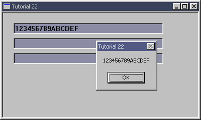

|
Tutorial 22 : Superclassing
format PE GUI 4.0
entry start
include '%fasminc%\win32a.inc'
section '.data' data readable writeable
wndH dd ?
insH dd ?
wndClsName db 'TUT_22',0
wndTitle db 'Tutorial 22',0
wndProcAddr dd ?
wndCls WNDCLASS
wndMsg MSG
ctlClsNameEdit db 'EDIT',0
ctlClsNameEditHex db 'EDIT_HEX',0
editH: times 6 dd ?
editHBuffer dw 16 ;2 bytes here
rb 14 ;14 + 2 = 16 bytes required, 15 for text, 1 for null terminated byte
section '.code' code readable executable
start:
invoke GetModuleHandle,0
mov [insH],eax
mov [wndCls.hInstance],eax
mov [wndCls.style],CS_HREDRAW or CS_VREDRAW
mov [wndCls.lpfnWndProc],window_procedure
mov [wndCls.lpszClassName],wndClsName
mov [wndCls.hbrBackground],COLOR_BTNFACE+1
invoke LoadIcon,NULL,IDI_APPLICATION
mov [wndCls.hIcon],eax
invoke LoadCursor,NULL,IDC_ARROW
mov [wndCls.hCursor],eax
invoke RegisterClass,wndCls
invoke CreateWindowEx,WS_EX_CLIENTEDGE,\
wndClsName,wndTitle,\
WS_OVERLAPPEDWINDOW + WS_VISIBLE,\
CW_USEDEFAULT,CW_USEDEFAULT,\
400,240,\
NULL,NULL,[insH],NULL
mov [wndH],eax
;+---------------------------+
;| entering the message loop |
;+---------------------------+
window_message_loop_start:
invoke GetMessage,wndMsg,NULL,0,0
or eax,eax
je window_message_loop_end
invoke TranslateMessage,wndMsg
invoke DispatchMessage,wndMsg
jmp window_message_loop_start
window_message_loop_end:
invoke ExitProcess,0
;+----------------------+
;| the window procedure |
;+----------------------+
proc window_procedure,hWnd,uMsg,wParam,lParam
editCls WNDCLASSEX
counter dd 0
enter
push ebx esi edi
cmp [uMsg],WM_CREATE
je wmCREATE
cmp [uMsg],WM_DESTROY
je wmDESTROY
wmDEFAULT:
invoke DefWindowProc,[hWnd],[uMsg],[wParam],[lParam]
jmp wmBYE
wmCREATE:
mov [editCls.cbSize],sizeof.WNDCLASSEX
lea ebx,[editCls]
invoke GetClassInfoEx,NULL,ctlClsNameEdit,ebx
push [editCls.lpfnWndProc]
pop [wndProcAddr]
mov [editCls.lpfnWndProc],edit_hex_procedure
push [insH]
pop [editCls.hInstance]
mov [editCls.lpszClassName],ctlClsNameEditHex
invoke RegisterClassEx,ebx
xor ebx,ebx
mov edi,20
@@:
cmp ebx,3
je @f
invoke CreateWindowEx,WS_EX_CLIENTEDGE,ctlClsNameEditHex,NULL,\
WS_CHILD + WS_VISIBLE + WS_BORDER,\
20,edi,300,24,\
[hWnd],NULL,[insH],NULL
mov [editH + 4 * ebx],eax
invoke SendMessage,eax,EM_LIMITTEXT,15,0 ;limit to 15 chars
inc ebx
add edi,30
jmp @b
@@:
invoke SetFocus,[editH]
jmp wmBYE
wmDESTROY:
invoke PostQuitMessage,0
wmBYE:
pop edi esi ebx
return
endp
proc edit_hex_procedure,hWnd,uMsg,wParam,lParam
push ebx esi edi
cmp [uMsg],WM_CHAR
je edit_hex_wmCHAR
cmp [uMsg],WM_KEYDOWN
je edit_hex_wmKEYDOWN
jmp @f
edit_hex_wmCHAR:
mov eax,[wParam]
cmp al,VK_BACK ;compare with virtual key BACKSPACE
je @f
cmp al,0x30 ;compare with ascii 0
jb edit_hex_wmBYE
cmp al,0x39 ;compare with ascii 9
jbe @f
cmp al,0x41 ;compare with ascii A
jb edit_hex_wmBYE
cmp al,0x46 ;compare with ascii F
jbe @f
cmp al,0x61 ;compare with ascii a
jb edit_hex_wmBYE
cmp al,0x66 ;compare with ascii f
jbe wmCHAR_add
jmp edit_hex_wmBYE ;something else
wmCHAR_add:
sub [wParam],0x20 ;so our AL become big letter
jmp @f
@@:
invoke CallWindowProc,[wndProcAddr],[hWnd],[uMsg],[wParam],[lParam]
jmp edit_hex_wmBYE
edit_hex_wmKEYDOWN:
mov eax,[wParam]
cmp al,VK_RETURN ;compare with virtual key RETURN
je wmKEYDOWN_VK_RETURN
cmp al,VK_TAB
je wmKEYDOWN_VK_TAB
jne @b
wmKEYDOWN_VK_TAB:
invoke GetKeyState,VK_SHIFT
test eax,0x80000000
je VK_TAB_NEXT
jmp VK_TAB_PREV
VK_TAB_NEXT:
invoke GetWindow,[hWnd],GW_HWNDNEXT
cmp eax,NULL
jne VK_TAB_BYE
invoke GetWindow,[hWnd],GW_HWNDFIRST
jmp VK_TAB_BYE
VK_TAB_PREV:
invoke GetWindow,[hWnd],GW_HWNDPREV
cmp eax,NULL
jne VK_TAB_BYE
invoke GetWindow,[hWnd],GW_HWNDLAST
jmp VK_TAB_BYE
VK_TAB_BYE:
invoke SetFocus,eax
xor eax,eax
jmp edit_hex_wmBYE
wmKEYDOWN_VK_RETURN:
invoke SendMessage,[hWnd],EM_GETLINE,0,editHBuffer
invoke MessageBox,[hWnd],editHBuffer,wndTitle,MB_OK
invoke SetFocus,[hWnd]
jmp edit_hex_wmBYE
edit_hex_wmBYE:
pop edi esi ebx
return
endp
section '.idata' import data readable
library KERNEL32, 'KERNEL32.DLL',\
USER32, 'USER32.DLL'
import KERNEL32,\
GetModuleHandle, 'GetModuleHandleA',\
ExitProcess, 'ExitProcess'
import USER32,\
RegisterClass, 'RegisterClassA',\
RegisterClassEx, 'RegisterClassExA',\
CreateWindowEx, 'CreateWindowExA',\
DefWindowProc, 'DefWindowProcA',\
LoadCursor, 'LoadCursorA',\
LoadIcon, 'LoadIconA',\
SendMessage, 'SendMessageA',\
GetMessage, 'GetMessageA',\
MessageBox, 'MessageBoxA',\
GetClassInfoEx, 'GetClassInfoExA',\
GetKeyState, 'GetKeyState',\
GetWindow, 'GetWindow',\
SetFocus, 'SetFocus',\
SetWindowLong, 'SetWindowLongA',\
CallWindowProc, 'CallWindowProcA',\
DestroyWindow, 'DestroyWindow',\
TranslateMessage, 'TranslateMessage',\
DispatchMessage, 'DispatchMessageA',\
PostQuitMessage, 'PostQuitMessage'
Result :

|